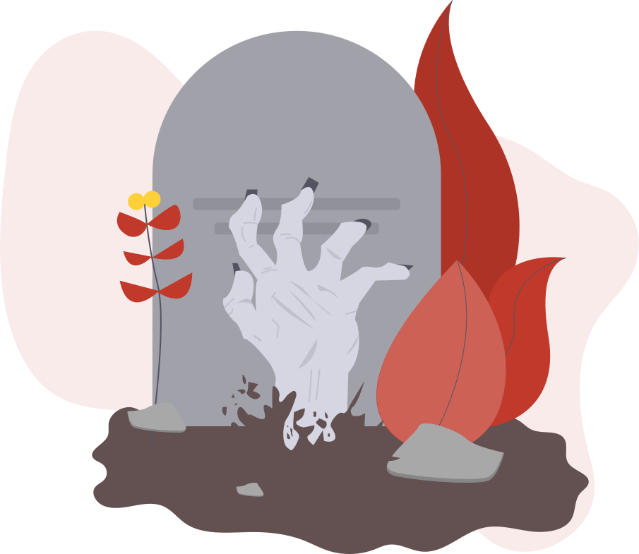

0
ml of coffee
ml of coffee
0
hours of work
hours of work
0
bugs fixed
bugs fixed
0
lines of code
lines of code
plug and play
use mello on the go. With plug-&-play driver install, mello can be used on any device whether it be old or new.
use mello on the go. With plug-&-play driver install, mello can be used on any device whether it be old or new.
gesture recognition
mello uses radar tech to sense minute gestures. Ditch the touch interaction and switch to mello today.
mello uses radar tech to sense minute gestures. Ditch the touch interaction and switch to mello today.
multi-compatibility
mello can be used on any device from smartphones to PCs. All you need is the chip and the USB/AUX receiver.
mello can be used on any device from smartphones to PCs. All you need is the chip and the USB/AUX receiver.
Meet us, See us in Action!
Kevin Baba ki jai
Kevin Baba ki jai
mello 2019
made with by Tech Syndicate
made with by Tech Syndicate